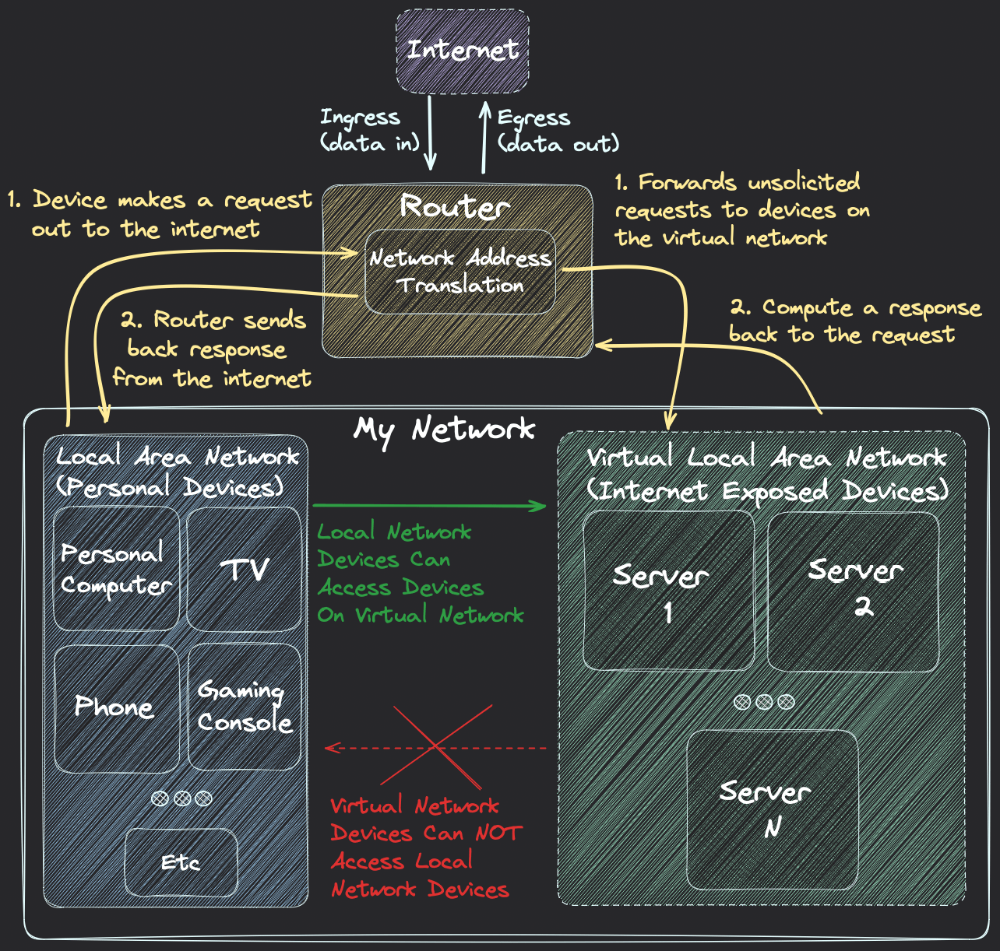
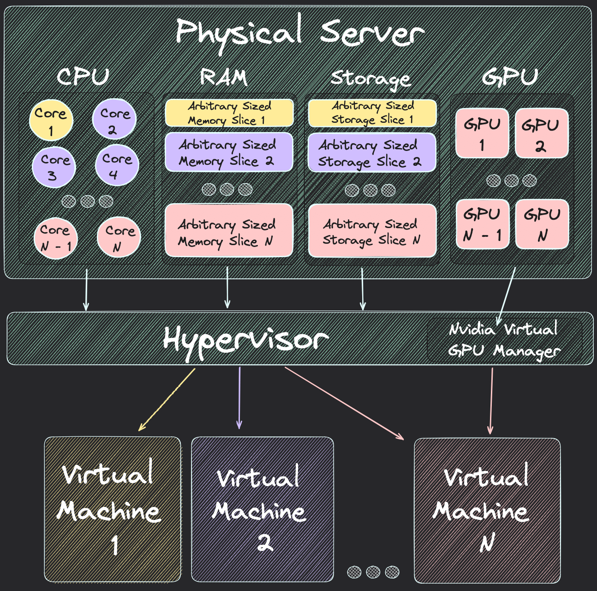

Posted: 04/03/2024 | Edited: 04/03/2024
At first thought this sounds like the worst prediction ever, but it seems to me this prediction is trending more and more true. Sure your workplace probably has more than 5 computers alone, yet I would bet those computers and prob the entire business itself critically depends on some cloud service or database. A vast amount of the internet is not individual's or companies machines, but cloud servers in some mega datacenter. The way I see it nowadays we just have the Microsoft, Google, Amazon, IBM, or Meta Computer's. Our "personal computers" are just that, personal and nothing in comparison to the something like Google's globally distributed monstrosity of a computer.I think there's a world market for maybe five computers.
"You will own nothing. You will be happy." Our Images, communications, music, documents, movies/tv, and compute is all mostly streamed from the cloud. We don't own things the same we used to, but honestly consuming data like this isn't the end of the world it has fair trade off's sometimes. However I want to start owning more of my data, and compute because it's hella cheaper than renting it for one, and I'm also not a big fan of giving 3rd parties my data and control over my services. Who knows what they're doing with our data like for example I didn't have a problem hosting my code on Github, but then I find out Microsoft has been training an Ai code generator using our code to then profit off of. Most importantly these bastards are stealing all the fun of learning and implementing this stuff myself.
A server is basically just a computer, if you've built a computer you can build a server. Here's the basics of what you need:
Once you connect all the hardware, you'll want to choose an operating system to install and run the server. My go to OS for servers is OpenBSD, it's secure by default and just works out of the box for almost every use case I've had. After the OS is up and running you'll want to setup SSH(1), so you can control the server from your laptop/desktop. From here you should just download some packages and do a little configuration this is more of a personal taste kind of thing, but I downloaded neovim, rust, node, git, zsh, and some other misc stuff like my config files.
If your server needs to allow remote connections like for example hosting a website or anything other people will use outside of your house, then you'll need to set up some network abstraction layers. Exposing a machine to the internet is dangerous and even puts other devices sharing that network like your phone at risk if an attacker was to somehow gain access to the server. By default a router ONLY has 1 remote (public) IP Address that all the devices on the network share, so how will the router know which device to send data?
Well for devices that are NOT exposed to the internet it's easy the router already handles this. Everytime a device makes a request out to the internet (ex: opening instagram) the router assigns a temporary unique port on the shared public IP address that maps back to the private IP address for the device that made the request. The router then just waits for a response back from the internet (ex: instagram sending your feed data) and forwards it to the right device.
Unfortunatly for devices that ARE exposed to the internet there is no default way for the router to know what data to send it. The reason is the device is now recieving requests (ex: you clicking this blog post) that it needs to respond to (ex: the page data for this blog post). These are some of the challenges to keep in mind when crafting a network, so here's how I designed mine:
Here I use my router to create a virtual network that keeps the servers isolated from other devices connected to my network like phone's, tv's, computer's, or gaming console's. Those personal devices can still connect directly to the server's, but the server's can NOT connect directly (or indirectly snoop on traffic) to my personal devices, and actually doesn't even know that other devices exist on the network. I also set up a Network Address Translation (NAT) for my router to forward all unsolicited request's to my server, so I could solve the problem of the router not knowing where to send incoming requests from the internet.
At this point I now have a fully functional server safely exposed to the internet for hosting websites and other remote internet services, but I also have GPU's connected to this server for compute that I don't want exposed to the internet. GPU's offer a lot of parrallel compute power and are very attractive to hackers for gaining control of, so how can I make sure they're not exposed to the internet without building a whole seperate server?
The same way I use virtualization on my network to isolate devices, I can also virtualize my server's resources. Virtual Machines are just that, think about it like mini computers running within your computer itself. I use OpenBSD's built in hypervisor vmm(4) to divide and isolate my computers resources into individual VM's.
I created a few virtual machines for different use cases. I only need about 4gb of RAM, 2 CPU cores, and 100gb of storage to host my websites and git server without any need of my GPU's. However I do some hobby Ai work like running inference on local models, and the occasional training of small nueral net's, so for this I need all my GPU's. My Ai computer needs to be local only, in the sense that it's not accessible from the internet even though I have another virtual machine for web hosting that is. Virtualization of my server gives me the flexability to build different kinds of systems, and also provides some security in the isolation or sandboxing of the virtual machines.
This is basically how cloud platforms work. If you're renting a server from Amazon they create a virtual machine on their actual computer for you to use. This gives thier customers the flexability to build whatever however, but also gives the cloud provider some security in having the customer sandboxed into a virtual machine that can't affect their actual computer or other customer's virtual machines.
Now all I have to do is write a nice API and fancy frontend to abstract away the virtualization process, so I can start up a cloud computing platform, and get rich brooos. Need to host a website? Or need some extra compute power to recover a forgotten password? shoot me an email to rent a virtual machine on The Hickey Cloud :)
idk copyright or whatever Ⓒ 2024 Antonio Hickey